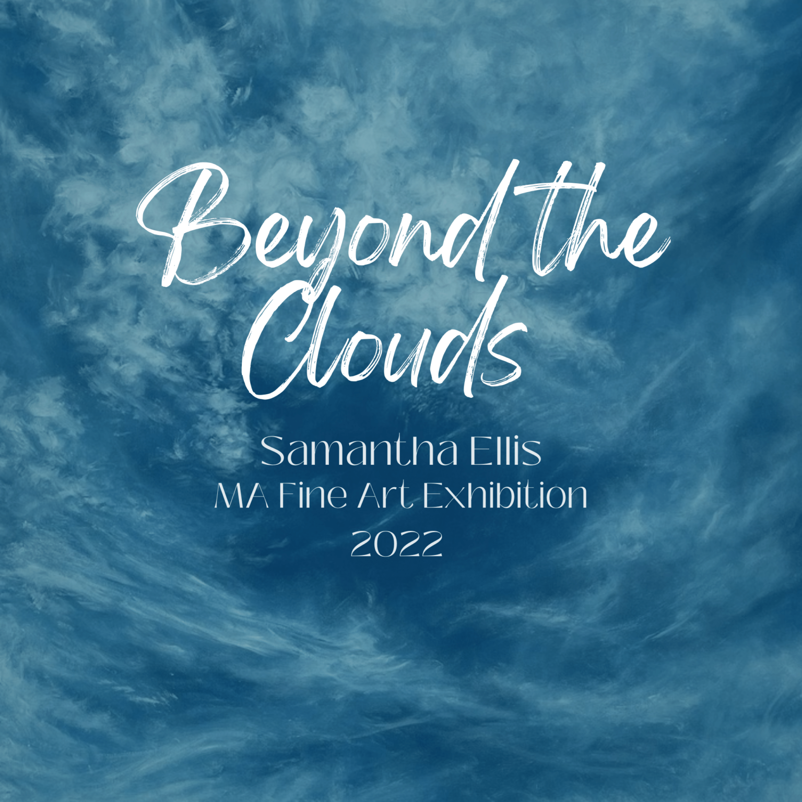
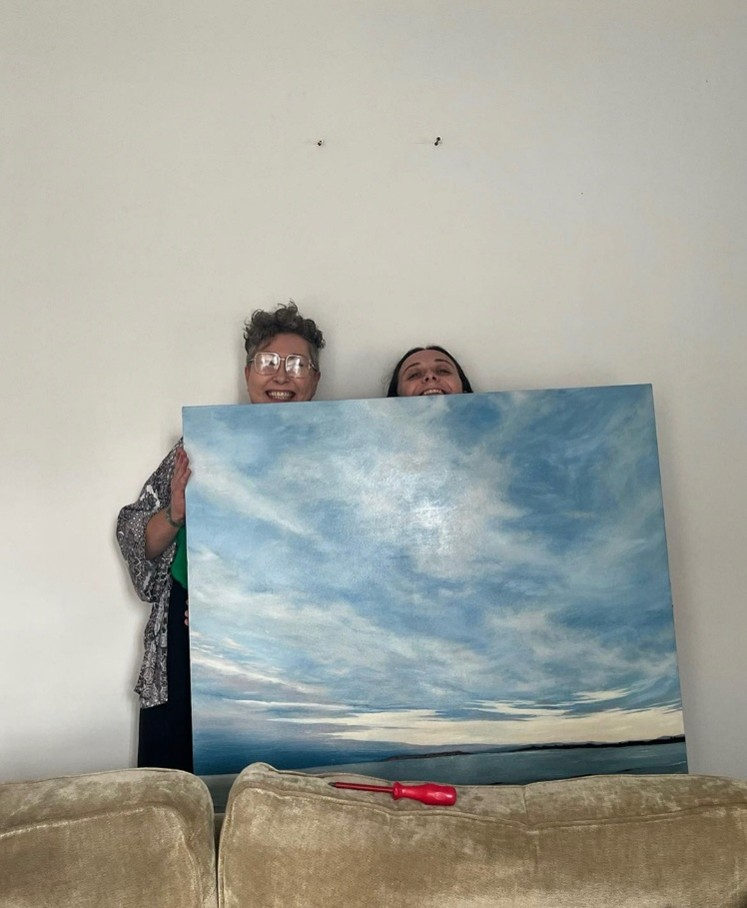

I would firstly like to start off by thanking you. If you are reading this, have been interested in my work for a while, are at my show or are a complete stranger. You have taken the time out of your life to take an interest in my most favourite thing in the world and I am so grateful to you all.
A massive thank you I would like to give out is to all my friends who over the past year of my MA have laughed, cried, danced and helped me every step of the way. I could have never imagined the love and support over the past year as even being possible without the collection of friends I am so lucky and have the joy to call mine.
A heartfelt thank you to Rory, who has helped and assisted with anything technological in setting up my show. For assuring me, supporting me, listening to me and helping me create the final show I have always wanted. I will forever be thankful.
I was lucky enough to be surrounded this year by an extremely beautiful and knowledgeable MA cohort and an amazingly assisting team of lecturers and support.
Sarah, Matthew, Marigold, Martyn and Esther I will miss you all, thank you for everything.
Rich for making me a million canvases and supporting me always, thank you.
A huge thank you to Dr Mike Evens who not only supported me through my degree but also into my MA. The advice and insight I have gained from you over the past 4 years of my life has been invaluable.
A special thank you to my MA course leader Dr Craig Staff who has listened to me in times of sadness, assured me in times of worry and challenged me in the best way through the year. I would not have been able to succeed without you. Thank you.
Finally, I would like to say with all the love and care in the world thank you to my Mum and Dad. I was never an easy child, always wanting to do something new. No matter what it was you have supported me. Through sports, singing and now painting, you have encouraged me and aided me in every way possible that parents could. I would never have been able to do any of it without you. Financially and emotionally you have been the most incredible support system and the opportunities and avenues you have made available in my life have been amazing. If I ever succeed in anything it is only because you have raised me with the willingness and drive to do so. Thank you will never be enough. I love you, forever.
